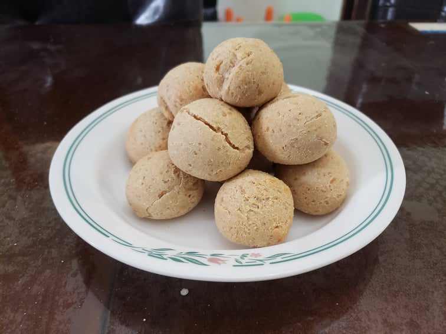

Pão de Queijo

Ingredients:
- 4 cups Tapioca flour
- 1 1/4 cup Milk
- 1/2 cup Water
- 6 tbsp Canola oil
- 2 tsp Salt
- 2 Large eggs
- 1 1/2 cup Parmesan cheese, grated
- 1 cup Mozzarella cheese, grated
Instructions:
- Preheat an oven to 400 degrees Fahrenheit.
- Combine the milk, water, oil and salt in a saucepan and bring to a boil over medium high heat.
- Once the milk mixture has come to a boil, remove from heat and mix in the flour.
- Once the mixture has cooled for a little bit, mix in the eggs. It will appear like it will not mix at first, but after a mixing for a while it will come together.
- Once the eggs are mixed in, begin to mix in the cheese, a little at a time, until fully incorporated. If the mixture is too liquidy, add more flour. If it is too thick, add more milk.
- Use wet hands and a spoon to scoop the dough and form into uniform small balls.
- Place the balls on a baking sheet covered with parchment paper and place it into a preheatd oven. Bake for 15-20 minutes or until they are golden and puffed. Serve warm.